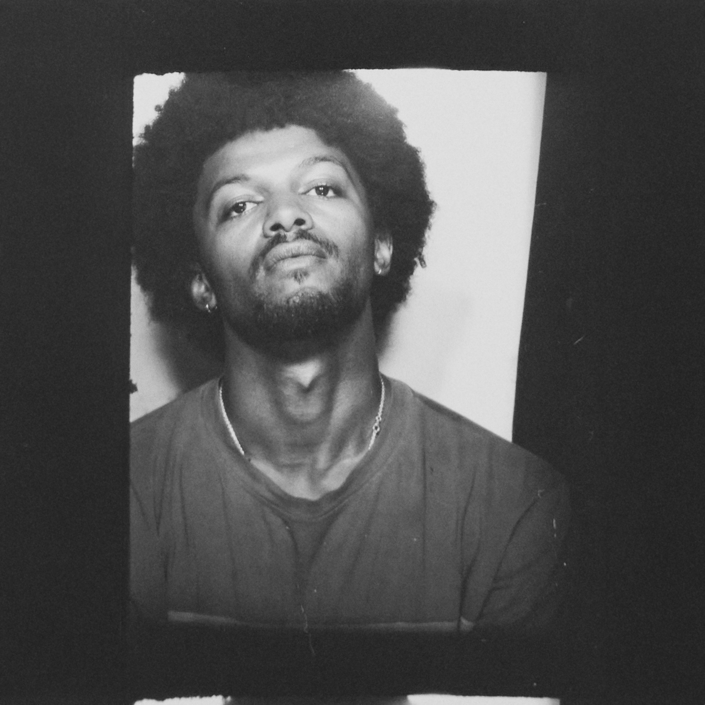

André Jacques is a British-Jamaican photographer based in London. Working across fashion, beauty, and portraiture, Jacques’ photographs delve into the nuanced intersections of identity, intimacy, and empathy—navigating the delicate space between the lens and the subject.
With a focus on craft, he explores rich colours and textures through analog darkroom techniques. His photography has been published in British Vogue, The Guardian, exhibited in The Room That Shared with Shanti Bell, and a winner of the British Journal of Photography’s Portrait of Britain award.
@andreiacques
studio@andrejacques.com